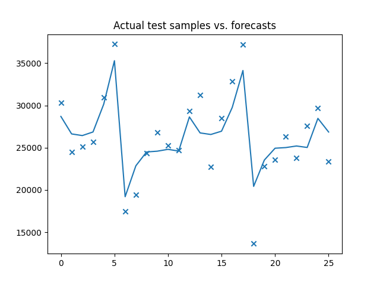

Note
Go to the end to download the full example code.
Simple auto_arima model
This is a simple example of how we can fit an ARIMA model in several lines without knowing anything about our data or optimal hyper parameters.

Performing stepwise search to minimize aic
ARIMA(2,1,2)(1,0,1)[12] intercept : AIC=2915.873, Time=1.01 sec
ARIMA(0,1,0)(0,0,0)[12] intercept : AIC=3049.597, Time=0.08 sec
ARIMA(1,1,0)(1,0,0)[12] intercept : AIC=2954.975, Time=0.40 sec
ARIMA(0,1,1)(0,0,1)[12] intercept : AIC=2947.028, Time=0.62 sec
ARIMA(0,1,0)(0,0,0)[12] : AIC=3047.612, Time=0.08 sec
ARIMA(2,1,2)(0,0,1)[12] intercept : AIC=2940.108, Time=1.02 sec
ARIMA(2,1,2)(1,0,0)[12] intercept : AIC=2915.651, Time=0.78 sec
ARIMA(2,1,2)(0,0,0)[12] intercept : AIC=2986.348, Time=0.11 sec
ARIMA(2,1,2)(2,0,0)[12] intercept : AIC=2915.275, Time=9.39 sec
ARIMA(2,1,2)(2,0,1)[12] intercept : AIC=2918.411, Time=11.22 sec
ARIMA(1,1,2)(2,0,0)[12] intercept : AIC=2925.080, Time=12.20 sec
ARIMA(2,1,1)(2,0,0)[12] intercept : AIC=2911.330, Time=11.72 sec
ARIMA(2,1,1)(1,0,0)[12] intercept : AIC=2911.555, Time=0.98 sec
ARIMA(2,1,1)(2,0,1)[12] intercept : AIC=2914.196, Time=9.02 sec
ARIMA(2,1,1)(1,0,1)[12] intercept : AIC=2912.289, Time=0.80 sec
ARIMA(1,1,1)(2,0,0)[12] intercept : AIC=2920.327, Time=5.97 sec
ARIMA(2,1,0)(2,0,0)[12] intercept : AIC=2928.273, Time=9.33 sec
ARIMA(3,1,1)(2,0,0)[12] intercept : AIC=2912.939, Time=8.80 sec
ARIMA(1,1,0)(2,0,0)[12] intercept : AIC=2954.804, Time=7.98 sec
ARIMA(3,1,0)(2,0,0)[12] intercept : AIC=2914.414, Time=10.30 sec
ARIMA(3,1,2)(2,0,0)[12] intercept : AIC=2915.331, Time=10.48 sec
ARIMA(2,1,1)(2,0,0)[12] : AIC=2908.221, Time=8.12 sec
ARIMA(2,1,1)(1,0,0)[12] : AIC=2909.011, Time=0.53 sec
ARIMA(2,1,1)(2,0,1)[12] : AIC=2910.144, Time=7.40 sec
ARIMA(2,1,1)(1,0,1)[12] : AIC=2908.093, Time=0.57 sec
ARIMA(2,1,1)(0,0,1)[12] : AIC=2933.343, Time=0.52 sec
ARIMA(2,1,1)(1,0,2)[12] : AIC=2910.039, Time=7.90 sec
ARIMA(2,1,1)(0,0,0)[12] : AIC=2980.096, Time=0.02 sec
ARIMA(2,1,1)(0,0,2)[12] : AIC=2921.090, Time=7.00 sec
ARIMA(2,1,1)(2,0,2)[12] : AIC=2912.081, Time=8.12 sec
ARIMA(1,1,1)(1,0,1)[12] : AIC=2915.531, Time=0.40 sec
ARIMA(2,1,0)(1,0,1)[12] : AIC=2925.551, Time=0.50 sec
ARIMA(3,1,1)(1,0,1)[12] : AIC=2911.034, Time=1.28 sec
ARIMA(2,1,2)(1,0,1)[12] : AIC=2913.397, Time=1.22 sec
ARIMA(1,1,0)(1,0,1)[12] : AIC=2952.580, Time=0.50 sec
ARIMA(1,1,2)(1,0,1)[12] : AIC=2922.527, Time=0.88 sec
ARIMA(3,1,0)(1,0,1)[12] : AIC=2912.590, Time=0.70 sec
ARIMA(3,1,2)(1,0,1)[12] : AIC=2913.867, Time=0.98 sec
Best model: ARIMA(2,1,1)(1,0,1)[12]
Total fit time: 159.215 seconds
print(__doc__)
# Author: Taylor Smith <taylor.smith@alkaline-ml.com>
import pmdarima as pm
from pmdarima import model_selection
import numpy as np
from matplotlib import pyplot as plt
# #############################################################################
# Load the data and split it into separate pieces
data = pm.datasets.load_wineind()
train, test = model_selection.train_test_split(data, train_size=150)
# Fit a simple auto_arima model
arima = pm.auto_arima(train, error_action='ignore', trace=True,
suppress_warnings=True, maxiter=5,
seasonal=True, m=12)
# #############################################################################
# Plot actual test vs. forecasts:
x = np.arange(test.shape[0])
plt.scatter(x, test, marker='x')
plt.plot(x, arima.predict(n_periods=test.shape[0]))
plt.title('Actual test samples vs. forecasts')
plt.show()
Total running time of the script: (2 minutes 39.383 seconds)